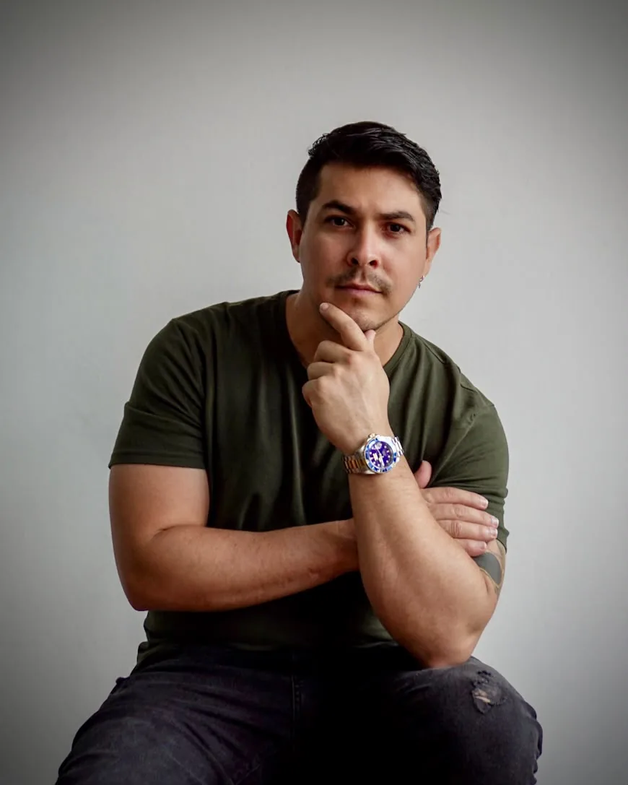

Projetos recentes

Damisel Ramírez — Dami Tattoo
A tatuagem é, para mim, muito mais do que arte na pele: é a união entre técnica, sensibilidade artística e histórias que merecem ser representadas de forma única. Minha trajetória como tatuador é marcada pela dedicação constante ao aperfeiçoamento, pelo estudo de cada projeto e pela busca de excelência em tatuagens realistas em preto e cinza e coloridas.
Meu trabalho se destaca pela riqueza de detalhes, pelo domínio de luzes e sombras, pela harmonia das cores e pela composição anatômica, criando tatuagens que valorizam as formas naturais do corpo. Cada projeto é desenvolvido com planejamento, precisão e atenção individual, porque acredito que uma grande tatuagem não depende apenas de uma boa imagem, mas de como ela ganha vida na pele.
@dami_tattooQual o valor de uma tatuagem com Damisel Ramirez?
Uma sessão com o Damisel Ramirez custa em média de R$1.000 a R$1.500. Para trabalhos menores, o valor mínimo é de R$500.
Solicite seu orçamento se cadastrando abaixo